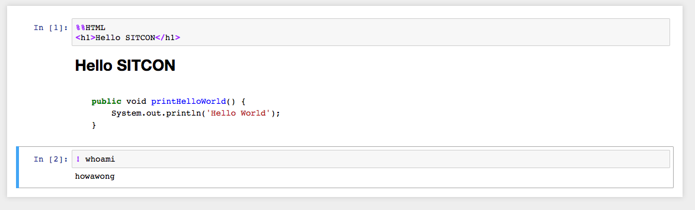

Jupyter 101 @ SITCON X HK 2017
Wong Ho Wa
howa.wong@gmail.com
2 Oct, 2017
Today's Agenda
- Jupyter
- Pandas
- Plot.ly
- scikit
About Myself
- Python & Open Source Developer
- Open Data Advocate
- Now working at Oursky Ltd
What is Jupyter?

Jupyter is ...
- forked from ipython in 2014
- interactive data science tool
- language agnostic (kernels)
- rich support and free
Installation
- Very simple
- python3 -mvenv ./env
- pip install jupyter
Let's Run Jupyter
- jupyter notebook
Interface
- Home
- Cell
- Toolbar
- Counter
Interface (Home)

Interface (Tool Bar)

Interface (Cells & Counter)
Markdown
- Simple, just like README.md in github
- Can also include LaTex
- General HTML
Markdown (Cont.)
Now, let's write some code. :)
lsmagic
- Show you magic functions
- %env SITCON=2017
- %%writefile hello.py, %pycat hello.py
Code
- ! ls
- Now let's write some python code!
Data Manipulation with Pandas
- Open source data analysis library
Pandas
- Basic Concepts
- Series
- 1D array
- DataFrame
- 2D array
- Properties
- indices
- columns
Let's load some data first
- df.read_csv
- df.head

Query
Column Mainuplation
Aggregation
Sorting
Visualization
- So far we just display the data in tabular
- Let's do some graph plotting
Popular Plotting Library
- Matlibplot
- Plot.ly
- etc
- Today we use plot.ly
Plot.ly
- Registration
- You need username and API Key

Plot.ly
- Let's try a bar chart first
- And then a pie chart
Plot.ly
- What about a map?
Machine Learning
- scikit
- Simple Linear Regression